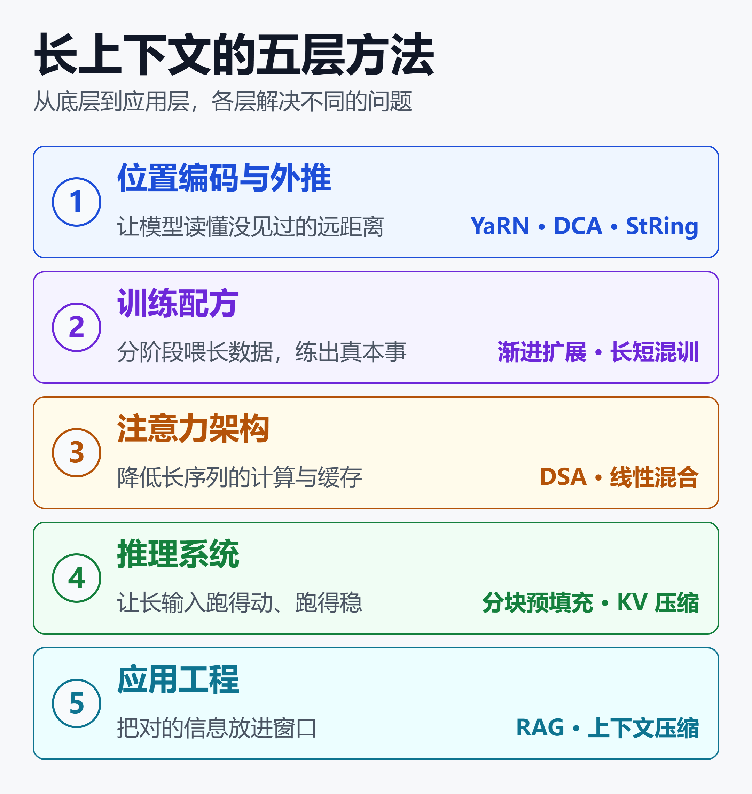
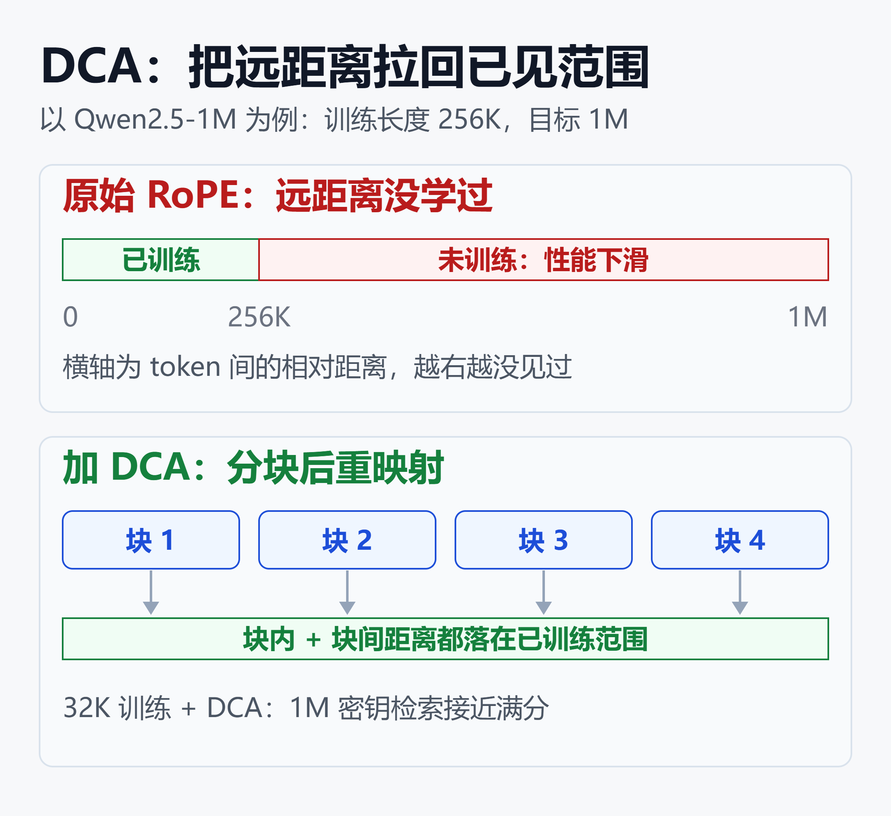
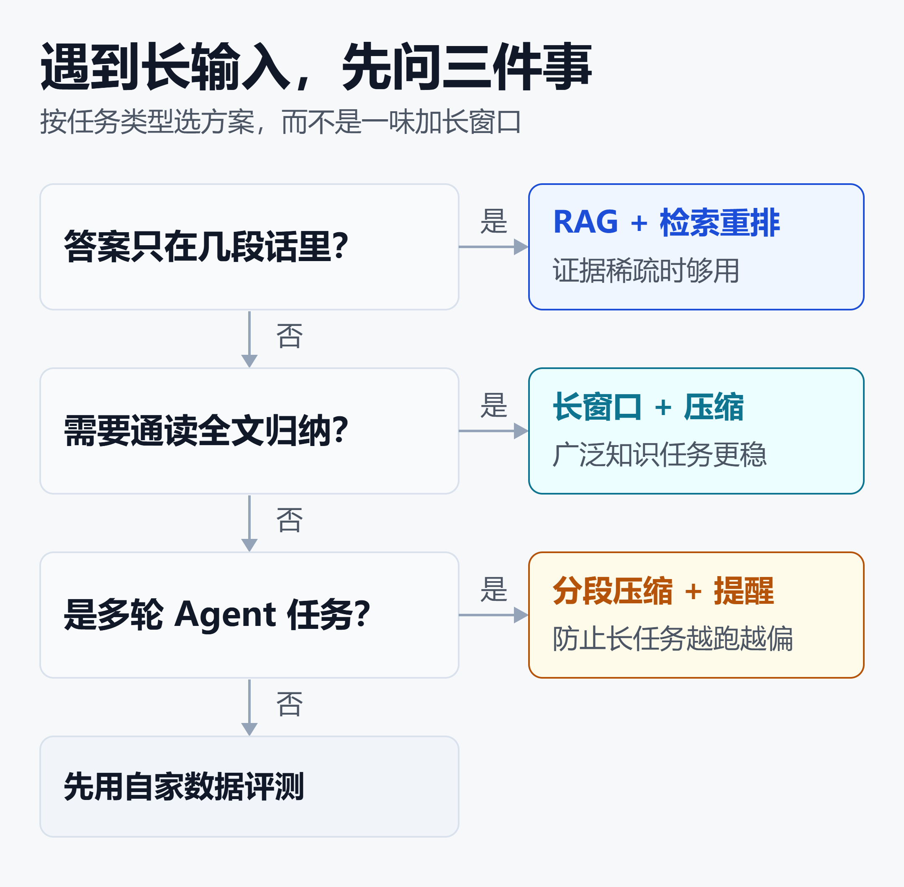

长上下文不等于长记忆：大模型“看清”百万 Token 的五层方法
把一条信息藏进 100 万 Token 的文本里，再让模型找出来。Gemini 3.1 Pro、Claude Opus 4.7 和 GPT-5.5，准确率都是 100%。
但把题目换成需要三步推理的链式查找，同样标称 100 万 Token 的模型，结局分成了三种：
- 稳住型：Gemini Pro 和 Claude 到 512K 仍保持 80% 以上的准确率，到 1M 只是小幅下降。
- 断崖型：GPT-5.5 和 Qwen3.6-plus 在 512K 到 1M 之间急剧崩盘。
- 缓降型：DeepSeek V4 Pro 从头到尾一路缓慢下滑。
以上来自 2026 年 5 月的一项评测，用的是古文语料，共测了五个标称 100 万 Token 的旗舰模型（arXiv：Retrieval and Multi-Hop Reasoning in 1M-Token Context Windows）。研究者的结论是：标称窗口长度很难代表多跳场景下的可用能力，最能拉开差距的，是 512K 到 1M 这一段。
Agent 场景里，这个差距更直观。另一项 2026 年的研究把 Opus 4.6、GPT 5.4 和 Gemini 3.1 当作监控器，让它们在编程 Agent 的长记录里找危险动作。当危险动作出现在 80 万 Token 的无害记录之后，被漏掉的次数是单独出现时的 2 到 30 倍（arXiv：Classifier Context Rot）。
这两项研究的样本和任务都有限，结论需要在自己的场景里验证。但它们指向同一件事：窗口能放下，不代表模型能用好。
这些模型的共同点，是都标称 100 万 Token。按第三方统计，这个量级在 2026 年已是主流旗舰的常规配置，GPT、Claude、Gemini、Qwen 等多个系列都有对应型号（Digital Applied：AI Context Window Comparison 2026）。Llama 4 Scout 更是标称 1000 万，但支持的输入长度不等于能在整段输入上可靠推理（Let's Data Science：How Long Context Models Actually Work Under the Hood）。
既然窗口数字代表不了真实能力，就需要拆开看：模型到底卡在哪一环？本文把提升长上下文识别能力的主流方法分成五层：位置编码、训练配方、注意力架构、推理系统和应用工程，并给出每一层的示例和适用场景。

这张图的结论是：位置编码和训练配方决定模型“能不能读懂”，注意力架构和推理系统决定“读得起、读得动”，应用工程决定“该读什么”。五层各管一段，哪一层出问题，就在哪一层修。
先看清问题：满分的大海捞针，不等于真能用
在谈方法之前，先要知道怎么量。大海捞针（Needle in a Haystack，NIAH）是在一大段无关文本里藏一句话，再让模型找出来。它是个很好的下限测试，但只测词面匹配这一种能力。
2024 年发布的 RULER 在此基础上增加了多根针、多跳追踪和聚合统计等任务。它测了 17 个标称 32K 以上的模型：多数在原版 NIAH 上近乎满分，一换成这些任务，长度越长，掉得越明显，只有约一半在 32K 仍保持满意表现（RULER 论文：What's the Real Context Size of Your Long-Context Language Models?）。
Chroma 的 Context Rot 报告进一步控制变量：任务难度保持不变，只增加输入长度。测试覆盖 18 个模型，包括 GPT-4.1、Claude 4、Gemini 2.5 和 Qwen3，结论是模型并不均匀地使用上下文，输入越长，表现越不可靠（Chroma：Context Rot）。
开头提到的监控器研究还有一个后续发现：在长记录里每隔一段插入提醒，可以部分缓解漏判，更好的后训练可能进一步改善（Classifier Context Rot：Monitor Performance Degrades with Context Length）。
还有两条值得注意的发现：
- 证据分散或被稀释时，更长的上下文不一定带来更好的结果，有时反而更差（How Fact Distribution and Don't Make It Up Prompts Shape Literal Extraction, Logical Inference, and Hallucination Risks in Long-Context LLMs）。
- 主流推理基准通常不控制目标任务在长上下文中的位置，而检索类评测会控制，这导致推理类评测可能忽略位置相关的失败（Positional Failures in Long-Context LLMs）。
另有第三方整理称，多数模型在标称上限的 60% 到 70% 处才能保持可靠质量（elvex：AI Model Context Window Comparison 2026）。这是二手数据，未经独立复现，更适合当作提醒，而不是定量依据。
所以，选择和评估长上下文方案的第一步，是用接近真实任务的方式测，而不是看窗口标称值。
第一层：位置编码与外推
为什么会“越界”
当前主流模型多使用旋转位置编码（RoPE）。模型在训练中只见过一定范围内的相对距离，推理时遇到更远的距离，注意力权重就会失真。Qwen 团队把长上下文性能下降的主因，归结为查询和键之间出现了训练中没见过的大相对位置距离（Qwen2.5-1M 官方博客）。
方法家族：从插值到重映射
RoPE 缩放有一个常见家族：线性插值、NTK-aware、YaRN 和 LongRoPE。它们的共同思路是不从头训练，通过调整位置编码，让一个短上下文预训练的模型扩展到更长窗口。例如 Llama 3.1 的基础长度是 8K，扩展后达到 131K（LocalAIMaster：How to Extend LLM Context Windows）。
YaRN 已经进入主流训练框架。NVIDIA NeMo RL 支持在 SFT、GRPO、DPO、奖励模型和蒸馏流程中使用 YaRN 缩放，用来在比预训练更长的序列上微调或做强化学习（NVIDIA NeMo RL：YaRN Long-Context Training）。
一个典型的 YaRN 配置长这样（示意，字段以所用框架文档为准）：
{
"rope_scaling": {
"rope_type": "yarn",
"factor": 4.0,
"original_max_position_embeddings": 32768
}
}
这里的含义是：原训练长度 32K，放大 4 倍，对应约 128K 窗口。从原理上看，静态缩放对所有输入一律生效，短文本也可能受到影响，所以建议只在确有长输入的服务里开启。
DCA：把远距离拉回已见范围
Dual Chunk Attention（DCA）换了个思路：不改缩放比例，而是把长序列分块，再把块内和块间的相对位置重映射到较小的值，避免出现训练没见过的距离。

这张图以 Qwen2.5-1M 为例：训练长度是 256K，目标是 1M，超出训练的部分用 DCA 重映射后仍落在已训练范围内。
按 Qwen 官方说法，仅训练到 32K 的 Qwen2.5-7B-Instruct 配合 DCA，在 1M 上下文的密钥检索（passkey）任务上接近满分。不过密钥检索属于简单的词面检索，和前面讲的 RULER 多跳任务并不是一回事，不宜直接等同于“读懂了 100 万 Token”。
StRing：不训练，换掉没学好的位置
StRing 是 2024 年的工作，但它对问题成因的解释至今仍被引用。它认为开源模型的有效长度通常不超过训练长度的一半，原因是训练中相对位置的分布左偏，远距离位置学得不充分（StRing 论文：Why Does the Effective Context Length of LLMs Fall Short?）。推理时，它把训练充分的位置“平移”过来，覆盖那些学得不好的位置。这种做法无需额外训练。
论文报告，在 Llama 3.1 70B 和 Qwen2 72B 上，它在 RULER 和 InfiniteBench 上提升了 10 分以上，Llama 3.1 70B 加上 StRing 后甚至超过 GPT-4-128K。这是论文自报的结果，具体收益取决于模型和评测集。
这一层的取舍很清楚：成本最低，见效最快，适合已有开源模型、想用现成权重拉长窗口的团队。但它治的是“越界”，治不了“训练时没学好”。
第二层：训练配方
位置编码改完了，模型还得练。长序列训练昂贵，所以业界的普遍做法是分阶段。Qwen2.5-1M 给出了一份相对完整的配方：
- 预训练：上下文从 4K 逐步增加到 256K，同时把 RoPE 的基础频率从 1 万调到 1000 万。
- 监督微调分两步：先只用 32K 以内的短指令，再混合短指令（32K 以内）和长指令（256K 以内），以保住短任务表现。
- 强化学习：只在 8K 以内的短文本上训练，官方称这足以提升偏好对齐，并能泛化到长上下文任务。
- 推理时再外推：用 DCA 把 256K 扩展到 1M。
官方的对比结果是：Qwen2.5-14B-Instruct-1M 在多个长上下文数据集上持续优于 GPT-4o-mini，而 7B 和 14B 的 1M 版本在短文本任务上与 128K 版本相当。这些都是厂商自报的结果，具体分数以其技术报告为准（Qwen2.5-1M Technical Report）。
训练本身的门槛也在降低。有研究报告，借助显存优化，Qwen2.5-7B 可以在单张 H200 上训练 400 万 Token 的上下文，否则需要用上下文并行的大集群（Out of the Memory Barrier：A Highly Memory Efficient Training System for LLMs with Million-Token Contexts）。另一项工作用动态稀疏注意力，在 32 张 A100 上把上下文从 32K 扩到 512K（MTraining：Distributed Dynamic Sparse Attention for Efficient Ultra-Long Context Training）。
这一层的经验可以归纳为两点：长上下文能力要靠长数据练出来，只靠推理时外推不够；同时要保留一部分短数据，防止长文本能力把短文本能力挤掉。
第三层：注意力架构
标准注意力的计算量随序列长度平方增长，缓存也随之膨胀。这一层的目标是让长序列“读得起”。路线和细节在《大模型注意力机制全景：从 MHA 到 MLA、DSA 与混合线性架构，一文看懂技术演进》里已有展开，这里只讲和“识别能力”相关的几点。
- 稀疏注意力：DeepSeek V3.2-Exp 的 DSA 先用一个轻量索引器给历史 Token 打分，再挑出最相关的一部分做精细注意力。按 Red Hat 的说明，长上下文 API 调用的成本最多降低一半，DeepSeek 也随之把 API 价格下调超过 50%（Red Hat：DeepSeek-V3.2-Exp on vLLM, Day 0）。
- 线性与混合注意力：Kimi Linear 的 KDA 报告 KV Cache 最多减少 75%，在 100 万上下文下解码吞吐最高提升 6 倍，并且在同等训练配方下优于全注意力基线（Kimi Linear 论文）。MiniMax-01 混合了闪电注意力、softmax 注意力和 MoE，总参数 456B，每个 Token 激活 459 亿（MiniMax-Text-01 模型卡）。
- 稀疏加线性：MiniCPM-SALA 是 9B 的混合架构，把稀疏注意力 InfLLM-V2 的高保真和线性注意力 Lightning Attention 的全局效率结合起来（MiniCPM-SALA 论文）。
需要分清的是：这些方法主要降低成本，不自动保证识别准确。线性层的记忆容量是固定的，所以混合架构通常会保留少量全注意力层，专门负责精确检索。还有研究指出，线性、循环和稀疏注意力降低了处理长序列的成本，但并没有规定事实何时写入、覆盖或丢弃（A Preliminary Study of Editable Request-Local Memory）。
所以，选这一层的方案时，要同时看效率数字和长上下文评测，二者缺一不可。
第四层：推理与系统
模型读得懂，还要跑得动。100 万 Token 的输入，光是预填充阶段的中间激活就很吓人：Qwen 团队测算，Qwen2.5-7B 直接处理 100 万 Token，MLP 层激活要占 71GB 显存。
他们的做法是分块预填充：每 32,768 个 Token 一块，激活显存降低了 96.7%。再叠加稀疏注意力加速预填充，在 100 万 Token 上得到 3.2 到 6.7 倍的提速。按官方给出的要求，跑 100 万 Token 的 7B 模型至少需要 120GB 显存（多卡合计），14B 则至少 320GB。
官方给出的 vLLM 启动方式如下（发布时需要使用 Qwen 的定制分支，后续是否合入主线以官方文档为准）：
vllm serve Qwen/Qwen2.5-7B-Instruct-1M \
--tensor-parallel-size 4 \
--max-model-len 1010000 \
--enable-chunked-prefill \
--max-num-batched-tokens 131072 \
--enforce-eager \
--max-num-seqs 1
这几个参数的作用是：--max-model-len 放开到约 100 万，--enable-chunked-prefill 打开分块预填充，--max-num-seqs 1 把并发压到最低，用来保住单请求的显存。
解码阶段的瓶颈则是 KV Cache。两类压缩思路值得关注：
- 两阶段压缩：RocketKV 先粗粒度丢弃不重要的 KV，再做精细的稀疏选择。论文报告在 A100 上，压缩比最高 400 倍，端到端提速最高 3.7 倍，解码阶段峰值显存最多降低 32.6%，精度损失可以忽略（RocketKV 论文）。
- 按语义片段压缩：ChunkKV 不再逐个 Token 判断去留，而是以语义连贯的片段为单位保留。在 LongBench、NIAH、GSM8K 等评测上，同等压缩率下精度最高比现有方法高 8.7%（ChunkKV 论文）。
压缩是有损的。以上数字都来自论文自报，换到自己的任务和文档类型上，需要重新验证。从原理上看，压缩率越高、任务越依赖分散的细节，丢信息的风险越大。
推理系统的部署选型，可参考《大模型推理框架选型2026：vLLM、SGLang、TensorRT-LLM、Ollama、Xinference五大框架怎么选》。
第五层：应用工程
前四层都在改模型和引擎，第五层不动模型，改的是“喂给模型什么”。这一层成本最低，往往也是最先该做的一层。
长上下文还是 RAG
一种常见说法是：长上下文适合“理解”，RAG 适合“发现”（AWS 技术品牌专区：长上下文与 RAG 技术对比与实战指南）。
有一项研究对此做了更细的对比：证据稀疏时，RAG 表现很好；需要综合广泛知识时，任务感知的 KV 压缩更占优。在 LongBench v2 上，30 倍压缩的任务感知方案比 RAG 最多高 7 个绝对点，延迟从 0.43 秒降到 0.16 秒（Task-Aware KV Cache Compression for Comprehensive Knowledge Reasoning）。
这是一项研究的结果，设置和数据集有限，不宜直接外推。但它给出了一个有用的分界：答案落在几段话里，先检索；答案散在全文里，才值得整篇读。
具体的成本对比和工作流模板，可以看《超长上下文时代：1200万Token如何改变你的工作流》；检索环节的细节，则见《BM25 没有过时，反而在大规模 RAG 里赢了：原理、混合检索与最新规模研究》。
Agent 的上下文压缩
Agent 的历史会越积越长，终会撑满窗口。常见做法是让模型把旧历史总结成摘要，也就是上下文压缩（compaction）。
问题在于总结是有损的，而且是阻塞调用，会让 Agent 停顿数十秒。并行压缩的研究就针对这一点：把历史切块并行总结，让运维方能更细粒度地控制摘要长度，同时缩短端到端时间（Parallel Context Compaction for Long-Horizon LLM Agent Serving）。
另一个方向是验证压缩是否丢了关键信息。Slipstream 用轨迹来检验压缩结果，在 SWE-bench Verified 和 BrowseComp 上，任务准确率最多提升 8.8 个百分点，端到端延迟最多降低 39.7%（Slipstream：Trajectory-Grounded Compaction Validation for Long-Horizon Agents）。
Agent 记忆与长上下文的关系，可以参考《AI Agent 记忆系统全解析：原理拆解、五大开源方案与真实应用场景》。
几条提示词层面的做法
以下是从上述研究推出的实践建议，不是某一篇论文的固定结论：
- 先精简，再喂入：证据被稀释时，更长的上下文可能更差，所以窗口够大也不要整库倒入，先去掉明显无关的段落。
- 指令前后各放一次：周期性提醒能缓解长记录里的漏判，因此可以在长文档的开头和结尾各写一遍任务和约束，超长任务中途再提醒。
- 长任务分段并留引用：压缩是有损的，每段小结时保留指向原文的位置，出现疑问时能回查。
- 要求引用原文再作答：让模型先摘出依据，再下结论，“看漏”会更容易被发现。
怎么选：按症状回到对应的层
下表是排查顺序的经验归纳，不是定论。遇到问题时，从上往下找最贴近的一行：
| 症状 | 优先排查 | 常见做法 |
|---|---|---|
| 超长后检索失败 | 位置编码 | YaRN、DCA |
| 中等长度也答偏 | 训练配方 | 换长训练模型 |
| 显存、延迟吃紧 | 架构与系统 | 分块、稀疏、压缩 |
| 干扰段落太多 | 应用工程 | 先检索再重排 |
| Agent 越跑越偏 | 应用工程 | 压缩加提醒 |

这张图把应用层的选择压缩成三个问题：答案只在几段话里，就用 RAG 加检索重排；需要通读全文归纳，用长窗口配合压缩；多轮 Agent 任务，用分段压缩加周期提醒；三者都不是，就先用自己的数据评测。
自己动手测一次
最可靠的办法是在自己的数据上测。下面是一个简化的流程（伪代码，build_prompt 和 ask 需要按自己的环境实现）：
lengths = [8_000, 32_000, 128_000]
depths = [0.1, 0.5, 0.9]
for n in lengths:
for d in depths:
prompt = build_prompt(n, d, needle)
reply = ask(model, prompt, question)
print(n, d, reply == answer)
测的时候有几点值得注意：
- 针用“语义相关但词面不同”的写法，不要只测原句匹配。
- 加入相近的干扰内容，并尝试多根针和多跳问题。
- 同时变化长度和位置，只改一个变量。
- 底料用真实业务文档，不要只用随机文本。
小结
长上下文不是“窗口越大越好”。位置编码解决“越界”，用 YaRN、DCA、StRing 等方法把已学过的位置用满；训练配方靠分阶段的长数据，把能力真正练出来；注意力架构和推理系统降低成本，让百万 Token 跑得起；应用工程决定该把什么放进窗口，往往收益最高、成本最低。
选方案之前，先用接近真实任务的方式评测。标称窗口只说明能放进去，不说明能用好。
免责声明
本文基于截至 2026 年 10 月 16 日的公开论文、官方博客和第三方整理撰写，仅供技术参考，不构成选型、采购或投资建议。文中的性能和效率数字多为论文或厂商自报，未经本文独立复现，实际效果随模型、数据和硬件而变化。部分信息来自第三方整理，已在正文中标注。
参考来源
- arXiv —— Retrieval and Multi-Hop Reasoning in 1M-Token Context Windows: Evaluating LLMs on Classical Chinese Text
- arXiv —— What's the Real Context Size of Your Long-Context Language Models?（RULER）
- arXiv —— Why Does the Effective Context Length of LLMs Fall Short?（StRing）
- Chroma —— Context Rot: How Increasing Input Tokens Impacts LLM Performance
- arXiv —— Classifier Context Rot: Monitor Performance Degrades with Context Length
- arXiv —— How Fact Distribution and Don't Make It Up Prompts Shape Literal Extraction, Logical Inference, and Hallucination Risks in Long-Context LLMs
- arXiv —— Positional Failures in Long-Context LLMs
- Digital Applied —— AI Context Window Comparison 2026
- Let's Data Science —— How Long Context Models Actually Work Under the Hood
- elvex —— AI Model Context Window Comparison 2026: Advertised vs. Real
- Qwen —— Qwen2.5-1M: Deploy Your Own Qwen with Context Length up to 1M Tokens
- arXiv —— Qwen2.5-1M Technical Report
- LocalAIMaster —— How to Extend LLM Context Windows
- NVIDIA —— YaRN Long-Context Training (NeMo RL)
- arXiv —— Out of the Memory Barrier: A Highly Memory Efficient Training System for LLMs with Million-Token Contexts
- arXiv —— MTraining: Distributed Dynamic Sparse Attention for Efficient Ultra-Long Context Training
- Red Hat —— DeepSeek-V3.2-Exp on vLLM, Day 0: Sparse Attention for long-context inference
- arXiv —— Kimi Linear: An Expressive, Efficient Attention Architecture
- GitHub —— MiniMax-Text-01 Model Card
- arXiv —— Hybridizing Sparse and Linear Attention for Efficient Long-Context Modeling（MiniCPM-SALA）
- arXiv —— A Preliminary Study of Editable Request-Local Memory
- arXiv —— Accelerating Long-Context LLM Inference via Two-Stage KV Cache Compression（RocketKV）
- arXiv —— Semantic-Preserving KV Cache Compression for Efficient Long-Context LLM Inference（ChunkKV）
- arXiv —— Task-Aware KV Cache Compression for Comprehensive Knowledge Reasoning
- CSDN 亚马逊云科技技术品牌专区 —— 大模型开发者必读：长上下文与RAG技术对比与实战指南
- arXiv —— Parallel Context Compaction for Long-Horizon LLM Agent Serving
- arXiv —— Slipstream: Trajectory-Grounded Compaction Validation for Long-Horizon Agents
相关阅读
- 大模型注意力机制全景：从 MHA 到 MLA、DSA 与混合线性架构，一文看懂技术演进
- 超长上下文时代：1200万Token如何改变你的工作流
- BM25 没有过时，反而在大规模 RAG 里赢了：原理、混合检索与最新规模研究
- AI Agent 记忆系统全解析：原理拆解、五大开源方案与真实应用场景
- 大模型推理框架选型2026：vLLM、SGLang、TensorRT-LLM、Ollama、Xinference五大框架怎么选
- 大模型评测全指南：从 MMLU、SWE-bench 到 Arena，读懂指标、排名与真实能力
推荐搭配装备
善其事，利其器。以下硬件能最大化你的AI体验👇
🔗 通过以上链接购买可支持本站持续运营 🙏